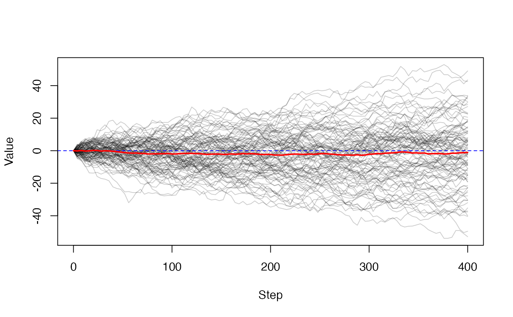

Iterate a dust model over time. This is a wrapper around calling
$run() and $state() repeatedly without doing anything very
interesting with the output. It is provided mostly as a
quick-and-dirty way of getting started with a model. This function
is deprecated since v0.7.8 and will be removed in a future version
of dust. Please use the $simulate() method directly on a dust
object - see below for details to update your code.
dust_iterate(model, steps, index = NULL)
| model | A model, compiled with |
|---|---|
| steps | A vector of steps - the first step must be same as
the model's step (i.e., |
| index | An optional index to filter the results with. |
A 3d array of model outputs. The first dimension is model
state, the second is particle number and the third is time, so
that output[i, j, k] is the ith variable, jth particle and
kth step.
To migrate to use the method, set the index into the model (if using), and use the simulate method:
mod$set_index(index) # if using mod$simulate(steps)
# Same random walk example as in ?dust model <- dust::dust_example("walk") # Create a model with 100 particles, starting at step 0 obj <- model$new(list(sd = 1), 0, 100) # Steps that we want to report at: steps <- seq(0, 400, by = 4) # Run the simulation: res <- obj$simulate(steps) # Output is 1 x 100 x 100 (state, particle, time) dim(res)#> [1] 1 100 101# Dropping the first dimension and plotting, with the mean in red # and the expectation in blue: xy <- t(res[1, , , drop = TRUE]) matplot(steps, xy, type = "l", lty = 1, col = "#00000033", xlab = "Step", ylab = "Value")